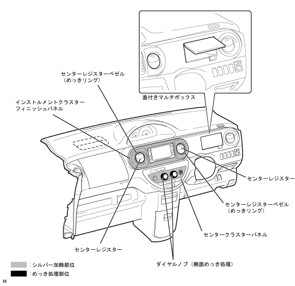

| Around the instrument panel |
| ● |
The instrument cluster finish panel made the long -circular panel (silver paint) with audio and center registers independent, making it look neat.In addition, plating rings have been set for the center register bezel.
|
| ● |
A multi -box with a lid was set in the instrument panel part in front of the driver's seat, and the appearance and use were improved, such as increasing the capacity.
|
| ● |
The center cluster panel of the car equipped with an auto -air conditioner has been changed to some of the silver decorations (tape), and the two dial knobs have been changed, and the design has been improved to improve the product.
|
|  |